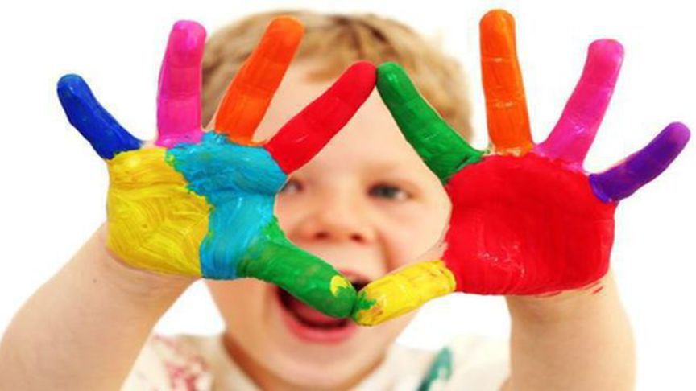
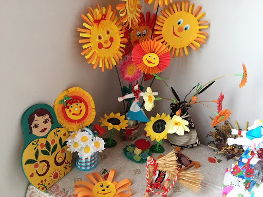
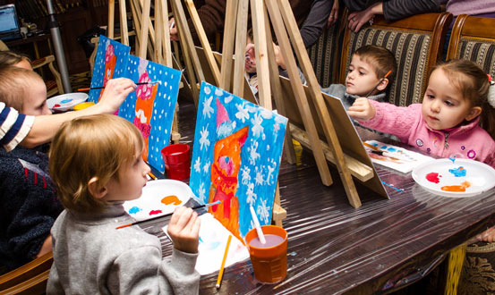
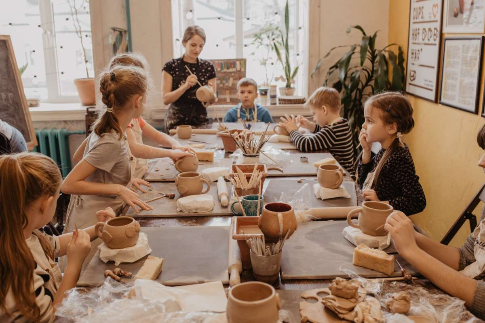

КАКИЕ КУРСЫ МЫ ПРЕДЛАГАЕМ
Работа по выявлению творческого потенциала детей в центре "Золотая рыбка" доверена профессионалам высокой квалификации. Для того чтобы не ошибиться с тематической направленностью занятий, родителям предлагается заранее ознакомиться со всеми кружками,уроками и секциями, которые работают на базе центра.
Все занятия осуществляются в атмосфере, которая максимально приближена к домашней. Студия детского творчества включает в себя:
- Занятия классическим балетом;
- Уроки вокала;
- Занятия конструированием;
- Кружок "Гончарный круг"
- Уроки изобразительного искусства;
- Уроки танцев разных направлений;
- Кружок декоративно-прикладного творчества «Цветная сказка».
Родители могут наблюдать за тем, как в творческом процессе происходит самовыражение малыша. Во время занятий в студии детского и юношеского творчества проявляются самые разнообразные эмоции. При этом немаловажное значение имеет развитие мелкой моторики ребенка, его внимания и усидчивости.
КАК ПОПАСТЬ НА ЗАНЯТИЯ В НАШУ СТУДИЮ ДЕТСКОГО ТВОРЧЕСТВА
Перечень курсов и кружков в центре "Золотая рыбка"достаточно большой.Для родителей важно, что все уроки и занятия ведут специалисты, отталкиваясь от особенностей детской психологии. Студия детского творчества полна уюта и тепла. Поэтому к нам с радостью приходят как дети, так и их родители. В каждой группе занимается не более 8 человек, это позволяет преподавателям уделить максимально большое внимание детям. При этом с утра в студии детского творчества планируются занятия для самых маленьких детей и их мам. В первой половине дня в нашей студии также занимаются дети дошкольного возраста. А уже после обеда для удобства родителей и детей у нас предусмотрены занятия для школьников. Для того чтобы записаться в студию детского творчества, можно связаться с руководством по телефону, который указан на официальном сайте центра "Золотая рыбка". Здесь же можно ознакомиться с расписанием кружков и курсов, а для удобства родителей предлагается к ознакомлению карта проезда.Студия детского творчества полна уюта и тепла. Поэтому к нам с радостью приходят как дети, так и их родители. В каждой группе занимается не более 8 человек, это позволяет преподавателям уделить максимально большое внимание детям. При этом с утра в студии детского творчества планируются занятия для самых маленьких детей и их мам. В первой половине дня в нашей студии также занимаются дети дошкольного возраста. А уже после обеда для удобства родителей и детей у нас предусмотрены занятия для школьников. Для того чтобы записаться в студию детского творчества, можно связаться с руководством по телефону, который указан на официальном сайте центра "Золотая рыбка". Здесь же можно ознакомиться с расписанием кружков и курсов, а для удобства родителей предлагается к ознакомлению карта проезда.
Кружок декоративно-прикладного творчества «Цветная сказка»
Кружок декоративно-прикладного творчества объёдиняет юных воспитанников с 9-11 лет, дает возможность воплощать свои творческие фантазии в изготовлении изделий в различных техниках прикладного рукоделия выполненных своими руками. Обучению в кружке способствует развитию творческих способностей, воображению, фантазии, овладению практическими умениями и навыками обрабатывать различные материалы с целью создания оригинальных изделий. Кружок позволяет параллельно осваивать несколько направлений декоративно-прикладного творчества (работа с тканью, бисером, вышивка и различными подручными материалами), что предоставляет больше возможностей для творческой самореализации обучающихся. В кружок принимаются дети с 9 лет по заявлению от родителей. При переводе на вторую и третью ступень обучения учитывается уровень усвоения учебного материала, а вновь прибывшие дети принимаются после входной аттестации. Кружок декоративно-прикладного творчества объёдиняет юных воспитанников с 9-11 лет, дает возможность воплощать свои творческие фантазии в изготовлении изделий в различных техниках прикладного рукоделия выполненных своими руками. Обучению в кружке способствует развитию творческих способностей, воображению, фантазии, овладению практическими умениями и навыками обрабатывать различные материалы с целью создания оригинальных изделий. Кружок позволяет параллельно осваивать несколько направлений декоративно-прикладного творчества (работа с тканью, бисером, вышивка и различными подручными материалами), что предоставляет больше возможностей для творческой самореализации обучающихся. В кружок принимаются дети с 9 лет по заявлению от родителей. При переводе на вторую и третью ступень обучения учитывается уровень усвоения учебного материала, а вновь прибывшие дети принимаются после входной аттестации.
Кружок изобразительного искусства
Под присмотром опытного педагога ребёнок переносит свой творческий замысел на бумагу. Фантазирует на заданную тему, продумывает сюжет и создаёт иллюстрацию с использованием различных техник, инструментов, приёмов рисования. Ребёноk получает удовольствие, опыт успешной реализации творческого замысла; учится не бояться красок, линий, орнаментов.
Кружок "Гончарный круг"
На занятиях дети получают практические навыки работы с гончарным кругом: учатся отминать глину для работы на круге, центровать её, формовать изделия. Осваивают приёмы декора посуды до обжига, росписи. Производство посуды уходит корнями в далёкое прошлое, и поэтому на занятиях дети знакомятся с традиционными формами сосудов. Кашники, кубышки, квасники, корчаги, бутыли.